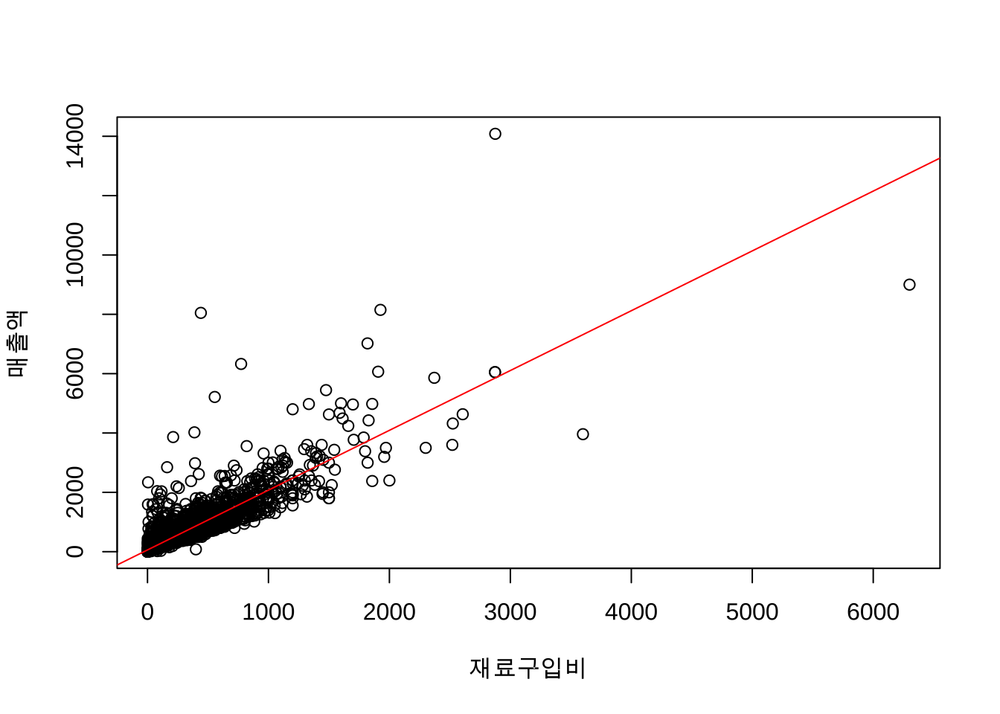
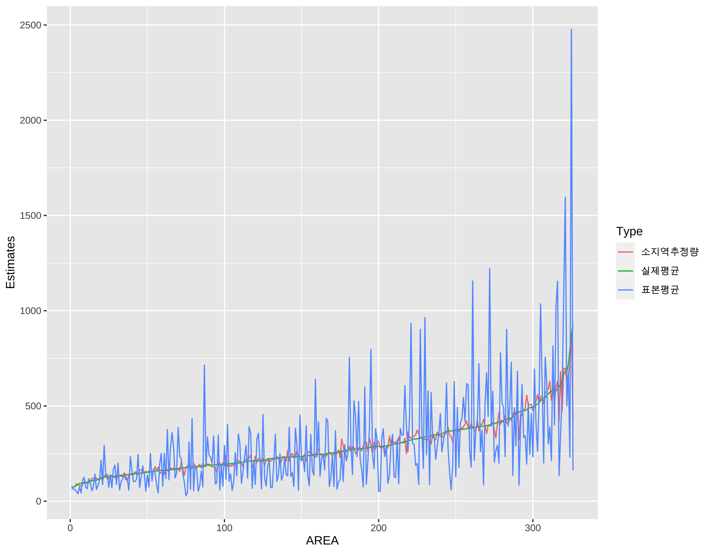
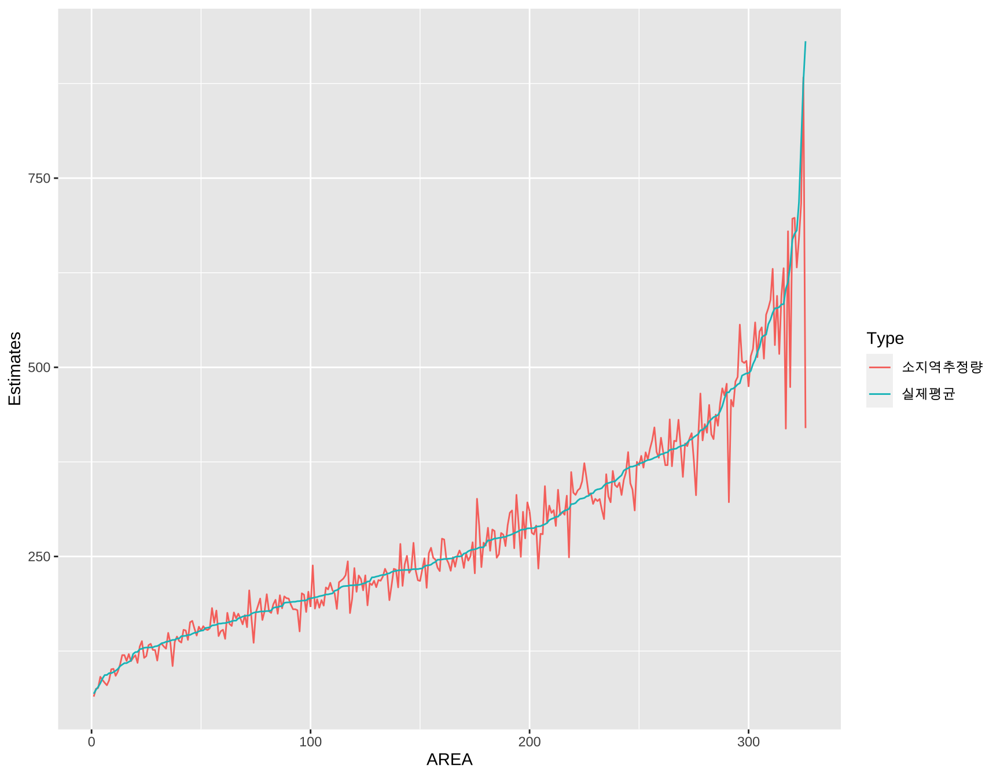

제 2 장 소지역추정
층화추출을 이용하는 표본조사(stratified sampling)에서 층에 배정된 표본수가 적을 경우에는 특성이 유사한 인근의 층의 추출단위들을 결합하여 추출단위들의 그룹을 만들고 그 그룹 내에서 추출단위들은 동일한 특성을 갖는다고 가정할 수 있으면 유사한 인근의 조사결과를 활용해서 좀더 정도높은 추정값을 작성할 수 있다.
이와 같이 비슷한 특성을 갖는 인근의 조사결과나 행정업무자료 또는 센서스 등 다른 통계조사 정보를 조사된 자료에서 얻은 직접 추정값과 결합하여 세부단위에 대한 통계를 작성하는 기법을 소지역 추정법(Small Area Estimation)이라고 한다.
소지역 추정법은 지역 수준모형(area-level model)과 단위 수준모형(unit-level model)이 있다.
- 지역 수준모형: 지역과 관련된 직접추정량과 지역의 보조자료를 결합한 모형
- 단위 수준모형: 지역과 관련된 직접추정량과 지역 안의 추출단위에 대한 보조자료를 결합한 모형
이 강의 예제에서는 단위 수준모형만 다룰 것이다.
2.1 단위 수준모형의 개요
2.1.1 모집단에 대한 가정
모집딘 \(U\) 가 \(D\) 개의 층으로 나누어져 있다고 가정하자, 층 \(U_1, U_2, \dots, U_D\)는 서로 겹치지 않는 작은 세부단위이며 각 층에는 각각 \(N_1, N_2, \dots, N_D\)의 추출단위가 있다고 하자.
이제 \(Y_{dj}\) 를 층 \(d\)에 속하는 \(i\) 번째 단위가 가진 값이라고 하자. 층 \(d\)에 속하는 모든 반응값들을 벡터로 표시하면 \(\bm y_d = (Y_{d1}, Y_{d2}, \cdots, Y_{dN_{d}})^t\) 이다.
이제 추정하고 싶은 모수는 층별 모평균 \(\bar Y_d\) 이다.
\[ \bar Y_d = \frac{ \sum_{j=1}^{N_s} Y_{dj} } { N_d} \]
이제 층별 모평균을 추정하기 위하여 층 \(U_d\) 에서 \(n_d\) 개의 표본 \(s_d\)를 추츨한다. 총 표본의 수 \(n= \sum_d n_d\) 는 각 층에서 추출한 표본의 수의 합니다.
소지역에서 표본에 속하지 않는 단위들의 집합을 \(r_d\)로 표기한다.
2.1.2 보조 정보와 계층 모형
이제 추출 단위(sampling unit)에 대한 보보 정보가 있다고 하자. 보조 정보는 추출 단위들의 실제값 \(y_{dj}\) 에 대한 정보를 지니고 있으며 \(p\)개의 변수로 구성되어 있다고 가정하자.
추출 단위에 대한 보조 정보 \(\bm x_{dj}\) 는 추출단위의 관심 변수 \(Y_{dj}\) 와 다음과 같은 계층보형의 관계를 가진다고 가정한다. 이러한 모형은 (Battese, Harter, and Fuller 1988)에 의하여 제안된 선형 혼합효과 모형이다.
\[\begin{equation} Y_{dj} = {\bm x}_{dj}^t \bm \beta + u_d + e_{dj} \tag{2.1} \end{equation}\]위 식 (2.1) 에서 \(u_d\)는 임의효과로서 소지역 \(U_d\)에 대한 효과(area effect)를 반영한다. 또한 \(e_{dj}\) 는 추출단의의 오차이다. 소지역 효과 \(u_d\)와 오차항 \(e_{dj}\) 는 다음과 같이 각각 정규분포를 따른다.
\[\begin{equation} u_d \sim N(0, \sigma^2_u), \quad e_{dj} \sim N(0, \sigma^2_e) \tag{2.2} \end{equation}\]소지역 효과 \(u_d\)와 오차항 \(e_{dj}\) 는 서로 독립이며 분산성분 \(\sigma^2_u\) 과 \(\sigma^2_e\)는 모르는 모수로 추정을 해야한다.
2.1.3 추정법
단위 수준모형 (2.1)에서 소지역 평균 \(\bar Y_d\)에 대한 추정량은 다음과 같은 최적 선형불편 예측량(Best Linear Unbiased Prediction; BLUP)으로 주어진다. (Royall 1970).
\[\begin{equation} \tilde {\bar Y}_d^{BLUP} = \frac{1}{N_d} \left [ \sum_{j \in s_d} Y_{dj} + \sum_{j \in r_d} \tilde Y_{dj} \right ] \tag{2.3} \end{equation}\]추정식 (2.3) 에서 표본에 속하지 않은 단위들에 대한 추정량 \(\tilde Y_{dj}\) 은 다음과 같이 주어진다.
\[ \tilde Y_{dj} = {\bm x}_{dj}^t \tilde {\bm \beta} + \tilde u_d \] 위의 식에서 \(\tilde u_d\) 는 소지역의 임의효과 \(u_d\) 에 대한 최적 선형불편 예측량(BLUP)이며 다음과 같이 표시할 수 있다.
\[ \tilde u_d = \gamma_d ( \bar y_{ds} - \bar { \bm x}_{ds}^t \tilde {\bm \beta} ) \] 여기서
\(\bar y_{ds}= \sum_{j \in s_d} Y_{dj}/ n_d\) 는 소지역 \(d\) 에서 추출된 관심변수 표본의 평균
\(\bar {\bm x}_{ds}= \sum_{j \in s_d} {\bm x}_{dj}/ n_d\) 는 소지역 \(d\) 에서 추출된 보조변수 표본의 평균
또한 같은 소지역에 소과는 단위들의 상관관계를 의미하는 \(\gamma_d\)는 다음과 같다.
\[ \gamma_d = \frac{ \sigma_u^2}{\sigma_u^2 + \sigma_e^2 / n_d}\]
위의 추정식들에서 분산성분 \(\sigma^2_u\) 과 \(\sigma^2_e\)은 모르는 모수이므로 최대가능도 추정(또는 제한적 최대 가능도 추정량, REML)을 통하여 추정하여야 한다.
추정된 분산성분을 다시 추정식 @res(eq:blup1) 에 대입하고 최종적으로 정리하면 소지역 추정량은 다음과 같이 주어진다.
\[\begin{equation} \hat {\bar Y}_d^{BLUP} = f_d \bar y_{ds} + (\bar {\bm X}_d - f_d \bar {\bm x}_{ds})^t \hat {\bm \beta} + (1-f_d) \hat u_d \tag{2.4} \end{equation}\]여기서 \(f_d = n_d/N_d\) 로서 표본 비율이다. 최종 소지역 추정식 @res(eq:blup2) 를 보면 보조 변수의 모집단 평균 \(\bar {\bm X}_d\)rk 필요한 것을 알 수 있다.
위의 소지역 추정에 대한 요약은 (Molina and Marhuenda 2015)에 더 자세한 내용이 있다.
2.2 예제
예제에서는 자영업이 많은 부분을 차지하고 있는 음식점에 대한 경제자료를 이용하여 표본 평균을 이용한 단순추정량과 소지역 모형을 사용한 추정량을 비교하려고 한다.
분석 자료는 A지역의 사업체를 한식음식점을 대상으로 제한하여 사용하였다.
표본설계는 동(소지역)을 층으로 하는 단순층화추출을 사용하였다.
관심변수는 매출액을 고려하였다.
2개의 보조변수는 재료구입비와 연간급여액을 고려하였다. 연간급여액과 재료구입비는 고용 보험 및 신용카드 내역을 통해 모든 사업체에 대해여 얻을 수 있는 자료로 지역 추정 모형에서 보조변수로 활용하였다.
두 보조자료를 바탕으로 매출액을 추정하는 소지역 추정 모형을 세워 단순 추정과 비교하고자 한다. 분석 자료에서 쓰이는 변수의 단위는 모두 ‘백만원’이다.
분석에 사용되는 모집단 자료의 개수는 총 10167 개로 A지역은 총 326개의 동(소지역, 층)로 나뉜다.
모의실험에서 표본 자료는 1489 개의 음식점을 추출하여 사용하였으며, 이를 추출하기 위하여 모집단의 각 동의 수에 비례하는 층화추출 방법을 사용하였다.
분석에서 사용되는 변수와 의미는 다음과 같다.
SLE_ALL_AMT": 매출액MNF_PCST:재료구입비SURV_PHS_SLR_SUM: 연간급여액AD_CD: 지역코드
2.2.1 자료 입력 및 정리
# SEED 고정
set.seed(321)
# 자료읽기
data <- read.sas7bdat("/Users/ylee19067/Dropbox/working/teaching/kimhj/sas/derived/fin_data.sas7bdat")
# 필요한 변수 선택
data <- data[c("SURV_PHS_SLR_SUM", "SLE_ALL_AMT", "MNF_PCST" , "AD_CD")]
# 자료를 지역번호 순으로 정렬
data <- data[order(data$AD_CD), ]
# 지역코드를 범주화 변수로 변환
data$AD_CD <- as.factor(data$AD_CD)
head(data, n=10)## SURV_PHS_SLR_SUM SLE_ALL_AMT MNF_PCST AD_CD
## 42 14 103 23 1101053
## 44 13 40 16 1101053
## 45 4 40 15 1101053
## 878 12 100 38 1101053
## 901 2 20 8 1101053
## 909 7 36 14 1101053
## 910 1 30 9 1101053
## 920 7 15 6 1101053
## 921 2 15 6 1101053
## 1028 5 56 15 11010532.2.2 모집단 정보 생성
# 모집단에서 각 동에 속한 사업체의 수를 계산
gu <- unique(data$AD_CD)
gugu <- table(data$AD_CD)
head(gugu, n=20)##
## 1101053 1101054 1101055 1101056 1101057 1101058 1101060 1101061 1101063 1101064
## 111 23 7 22 3 11 33 274 60 37
## 1101065 1101066 1101067 1101068 1101069 1101070 1101071 1101072 1102052 1102054
## 38 4 21 14 4 14 18 16 125 852.2.3 사업체의 수가 10개 미만인 동을 제거
표본 추출할 경우 사업체으 수가 극단적으로 작은 동은 표본의 배정이 사업체의 수보다 많아질 수 있으므로 사업체의 수가 10 미만인 동을 모집단에서 제거한다.
# 사업체의 수가 10 미만인 동을 제거
smalldong <- names(gugu[gugu < 10])
data <- data %>% rowwise() %>% filter(!AD_CD %in% smalldong)
data$AD_CD <- droplevels(data$AD_CD)
# 모집단에서 각 동에 속한 사업체의 수를 다시 계산
gugu = table(data$AD_CD)
head(gugu, n=20)##
## 1101053 1101054 1101056 1101058 1101060 1101061 1101063 1101064 1101065 1101067
## 111 23 22 11 33 274 60 37 38 21
## 1101068 1101070 1101071 1101072 1102052 1102054 1102055 1102057 1102058 1102059
## 14 14 18 16 125 85 188 41 24 612.2.4 최종 모집단의 수
dim(data)## [1] 10167 4최종 모집단에서 음식점의 수는 10167 개이다.
최종 모집단에서 소지역(동)의 개수는 326 개이다.
2.2.5 관심변수와 보조변수의 관계
이제 모집단에서 매출액과 재료 구입비에 대한 관계를 회귀분석으로 분석해 보자.
line1 <- lm(data$SLE_ALL_AMT ~ data$MNF_PCST)
summary(line1)##
## Call:
## lm(formula = data$SLE_ALL_AMT ~ data$MNF_PCST)
##
## Residuals:
## Min 1Q Median 3Q Max
## -3759.3 -52.0 -25.8 20.7 8228.3
##
## Coefficients:
## Estimate Std. Error t value Pr(>|t|)
## (Intercept) 58.92009 2.66787 22.09 <2e-16 ***
## data$MNF_PCST 2.01593 0.01018 197.94 <2e-16 ***
## ---
## Signif. codes: 0 '***' 0.001 '**' 0.01 '*' 0.05 '.' 0.1 ' ' 1
##
## Residual standard error: 230.2 on 10165 degrees of freedom
## Multiple R-squared: 0.794, Adjusted R-squared: 0.794
## F-statistic: 3.918e+04 on 1 and 10165 DF, p-value: < 2.2e-16plot(data$SLE_ALL_AMT ~ data$MNF_PCST, xlab='재료구입비', ylab='매출액')
abline(line1, col='red')
equatiomatic::extract_eq(line1, use_coefs = TRUE)\[ \operatorname{\widehat{data\$SLE\_ALL\_AMT}} = 58.92 + 2.02(\operatorname{data\$MNF\_PCST}) \]
이제 모집단에서 매출액과 연간급여액에 대한 관계를 분석해 보자.
line2 <- lm(data$SLE_ALL_AMT ~ data$MNF_PCST)
summary(line2)##
## Call:
## lm(formula = data$SLE_ALL_AMT ~ data$MNF_PCST)
##
## Residuals:
## Min 1Q Median 3Q Max
## -3759.3 -52.0 -25.8 20.7 8228.3
##
## Coefficients:
## Estimate Std. Error t value Pr(>|t|)
## (Intercept) 58.92009 2.66787 22.09 <2e-16 ***
## data$MNF_PCST 2.01593 0.01018 197.94 <2e-16 ***
## ---
## Signif. codes: 0 '***' 0.001 '**' 0.01 '*' 0.05 '.' 0.1 ' ' 1
##
## Residual standard error: 230.2 on 10165 degrees of freedom
## Multiple R-squared: 0.794, Adjusted R-squared: 0.794
## F-statistic: 3.918e+04 on 1 and 10165 DF, p-value: < 2.2e-16plot(data$SLE_ALL_AMT ~ data$MNF_PCST, xlab='연간급여액', ylab='매출액')
abline(line2, col='red')equatiomatic::extract_eq(line2, use_coefs = TRUE)\[ \operatorname{\widehat{data\$SLE\_ALL\_AMT}} = 58.92 + 2.02(\operatorname{data\$MNF\_PCST}) \]
2.2.6 표본 배정과 표본 가중치을 위한 함수
#표본 배정을 위한 함수
calsamspleize <- function(samplesize, gugu) {
ceiling(gugu/sum(gugu)*samplesize)
}
#표본 가중치을 위한 함수
calweight2 <- function(samplesize, gugu){
xx <- as.data.frame(gugu)
yy <- as.data.frame(samplesize)
w = xx$Freq/ yy$Freq
data.frame(AD_CD = xx$Var1, popN = xx$Freq, samplesize = yy$Freq, weight=w)
}2.2.7 표본 배정
#먼저 1000 개의 표본을 비례할당
samplesize = 1000
sample.result <- calsamspleize(samplesize, gugu)
# 최소 표본을 1개로 지정
sample.result <- sample.result+1
# 표본 개수 다시 계산
samplesize <- sum(sample.result )
# 표본의 총수
sum(samplesize)## [1] 1489# 최종 표본 할당
head(sample.result, n=20)##
## 1101053 1101054 1101056 1101058 1101060 1101061 1101063 1101064 1101065 1101067
## 12 4 4 3 5 28 7 5 5 4
## 1101068 1101070 1101071 1101072 1102052 1102054 1102055 1102057 1102058 1102059
## 3 3 3 3 14 10 20 6 4 72.2.8 표본 가중치 계산 및 모집단 정보 생성
popinfo <- calweight2(sample.result, gugu)
head(popinfo)## AD_CD popN samplesize weight
## 1 1101053 111 12 9.250000
## 2 1101054 23 4 5.750000
## 3 1101056 22 4 5.500000
## 4 1101058 11 3 3.666667
## 5 1101060 33 5 6.600000
## 6 1101061 274 28 9.7857142.2.9 자료와 모집단 정보의 결합
data1 <- left_join(data,popinfo,by="AD_CD")
head(data1, n=20)## # A tibble: 20 x 7
## # Rowwise:
## SURV_PHS_SLR_SUM SLE_ALL_AMT MNF_PCST AD_CD popN samplesize weight
## <dbl> <dbl> <dbl> <fct> <int> <dbl> <dbl>
## 1 14 103 23 1101053 111 12 9.25
## 2 13 40 16 1101053 111 12 9.25
## 3 4 40 15 1101053 111 12 9.25
## 4 12 100 38 1101053 111 12 9.25
## 5 2 20 8 1101053 111 12 9.25
## 6 7 36 14 1101053 111 12 9.25
## 7 1 30 9 1101053 111 12 9.25
## 8 7 15 6 1101053 111 12 9.25
## 9 2 15 6 1101053 111 12 9.25
## 10 5 56 15 1101053 111 12 9.25
## 11 7 22 8 1101053 111 12 9.25
## 12 9 54 21 1101053 111 12 9.25
## 13 11 100 70 1101053 111 12 9.25
## 14 15 76 24 1101053 111 12 9.25
## 15 13 43 10 1101053 111 12 9.25
## 16 7 43 9 1101053 111 12 9.25
## 17 7 43 9 1101053 111 12 9.25
## 18 13 70 32 1101053 111 12 9.25
## 19 16 100 38 1101053 111 12 9.25
## 20 11 90 35 1101053 111 12 9.252.2.10 매출액의 지역별 모집단 평균계산
popMeanT <- data1 %>% group_by(AD_CD) %>%
summarise(SLE_ALL_AMT_mean = mean(SLE_ALL_AMT, na.rm=TRUE)) %>% as.data.frame()
head(popMeanT)## AD_CD SLE_ALL_AMT_mean
## 1 1101053 474.3514
## 2 1101054 583.4348
## 3 1101056 479.0000
## 4 1101058 254.6364
## 5 1101060 319.1818
## 6 1101061 373.51822.2.11 표본 추출
sample.final = sampling::strata(data1 , 'AD_CD', size=sample.result, method="srswor")
sampledata = data1[sample.final$ID_unit, ]
sampledata <- as.data.frame(sampledata )
head(sampledata, n=20)## SURV_PHS_SLR_SUM SLE_ALL_AMT MNF_PCST AD_CD popN samplesize weight
## 1 7 22 8 1101053 111 12 9.25
## 2 7 43 9 1101053 111 12 9.25
## 3 1 3 1 1101053 111 12 9.25
## 4 3 12 5 1101053 111 12 9.25
## 5 43 298 99 1101053 111 12 9.25
## 6 73 298 69 1101053 111 12 9.25
## 7 16 210 120 1101053 111 12 9.25
## 8 90 781 429 1101053 111 12 9.25
## 9 100 600 20 1101053 111 12 9.25
## 10 10 24 7 1101053 111 12 9.25
## 11 192 520 180 1101053 111 12 9.25
## 12 222 1208 733 1101053 111 12 9.25
## 13 61 420 189 1101054 23 4 5.75
## 14 138 800 320 1101054 23 4 5.75
## 15 288 1020 357 1101054 23 4 5.75
## 16 768 2380 360 1101054 23 4 5.75
## 17 20 144 70 1101056 22 4 5.50
## 18 5 117 60 1101056 22 4 5.50
## 19 10 155 30 1101056 22 4 5.50
## 20 151 365 150 1101056 22 4 5.502.2.12 표본자료와 표본 추출정보 결합
strat_design <- svydesign(id = ~1, strata = ~AD_CD, weights = ~weight, data = sampledata)2.2.13 단순 추정량 계산
res0 <- survey::svyby(~SLE_ALL_AMT, ~AD_CD, strat_design, svymean)
head(res0, n=20)## AD_CD SLE_ALL_AMT se
## 1101053 1101053 334.91667 109.349485
## 1101054 1101054 1155.00000 426.722002
## 1101056 1101056 195.25000 57.143642
## 1101058 1101058 76.66667 8.333333
## 1101060 1101060 260.40000 77.576156
## 1101061 1101061 493.14286 99.047270
## 1101063 1101063 233.57143 39.544343
## 1101064 1101064 243.60000 58.795918
## 1101065 1101065 228.40000 58.707410
## 1101067 1101067 215.25000 81.787708
## 1101068 1101068 75.00000 24.637370
## 1101070 1101070 59.33333 16.895101
## 1101071 1101071 360.00000 83.266640
## 1101072 1101072 756.33333 345.904772
## 1102052 1102052 459.71429 100.088720
## 1102054 1102054 319.90000 149.510271
## 1102055 1102055 682.40000 133.417082
## 1102057 1102057 211.66667 66.352928
## 1102058 1102058 499.00000 235.047158
## 1102059 1102059 389.42857 151.7915012.2.14 보조변수에 대한 층별 모평균 계산
popMean <- data1 %>% group_by(AD_CD) %>%
summarise(MNF_PCST_mean = mean(MNF_PCST, na.rm=TRUE), SURV_PHS_SLR_SUM_mean=mean(SURV_PHS_SLR_SUM, na.rm=TRUE)) %>% as.data.frame()
head(popMean)## AD_CD MNF_PCST_mean SURV_PHS_SLR_SUM_mean
## 1 1101053 214.2883 85.09009
## 2 1101054 217.2609 144.69565
## 3 1101056 205.8636 121.54545
## 4 1101058 130.5455 33.81818
## 5 1101060 135.4848 76.81818
## 6 1101061 157.2007 77.510952.2.15 층별 사업체 수 생성
popN <- popinfo[,1:2]
head(popN)## AD_CD popN
## 1 1101053 111
## 2 1101054 23
## 3 1101056 22
## 4 1101058 11
## 5 1101060 33
## 6 1101061 2742.2.16 소지역 모형 적합
res <- eblupBHF(SLE_ALL_AMT ~ MNF_PCST + SURV_PHS_SLR_SUM, dom =AD_CD, meanxpop = popMean,
popnsize = popN, data = sampledata)2.2.17 모수 추정 결과
\[ \hat \sigma^2_b =49.65, \quad \hat \sigma^2_e = 17216.15 \]
res$fit$summary## Linear mixed model fit by REML ['lmerMod']
## Formula: ys ~ -1 + Xs + (1 | dom)
##
## REML criterion at convergence: 18756.5
##
## Scaled residuals:
## Min 1Q Median 3Q Max
## -6.3258 -0.2029 -0.0063 0.2039 20.8385
##
## Random effects:
## Groups Name Variance Std.Dev.
## dom (Intercept) 49.66 7.047
## Residual 17216.15 131.210
## Number of obs: 1489, groups: dom, 326
##
## Fixed effects:
## Estimate Std. Error t value
## Xs(Intercept) 5.74487 4.00677 1.434
## XsMNF_PCST 1.24440 0.02233 55.721
## XsSURV_PHS_SLR_SUM 2.45568 0.04966 49.455
##
## Correlation of Fixed Effects:
## Xs(In) XMNF_P
## XsMNF_PCST -0.159
## XSURV_PHS_S -0.191 -0.7712.2.18 추정량의 비교
finalres1 <- popMeanT
finalres1$samplemean <- res0$SLE_ALL_AMT
finalres1$sae <- res$eblup$eblup
finalres1 <- finalres1[order(finalres1$SLE_ALL_AMT_mean), ]
finalres1$area <- 1:(dim(finalres1)[1])
colnames(finalres1) <- c("AD_CD", "실제평균", "표본평균", "소지역추정량", "AREA")
finalres1 <- finalres1[,2:5]
finalres2 <- gather(finalres1, Type, Estimates,"실제평균", "표본평균", "소지역추정량")ggplot(finalres2, aes(x=AREA, y=Estimates, color=Type)) +geom_line()
finalres3 <- finalres2 %>% filter(Type != "표본평균")
ggplot(finalres3, aes(x=AREA, y=Estimates, color=Type)) +geom_line()